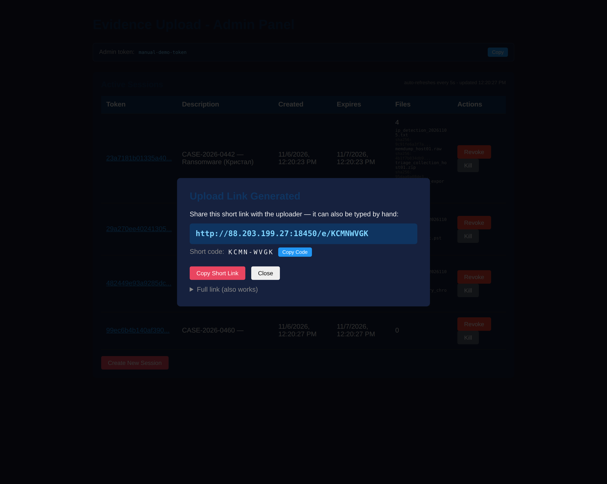
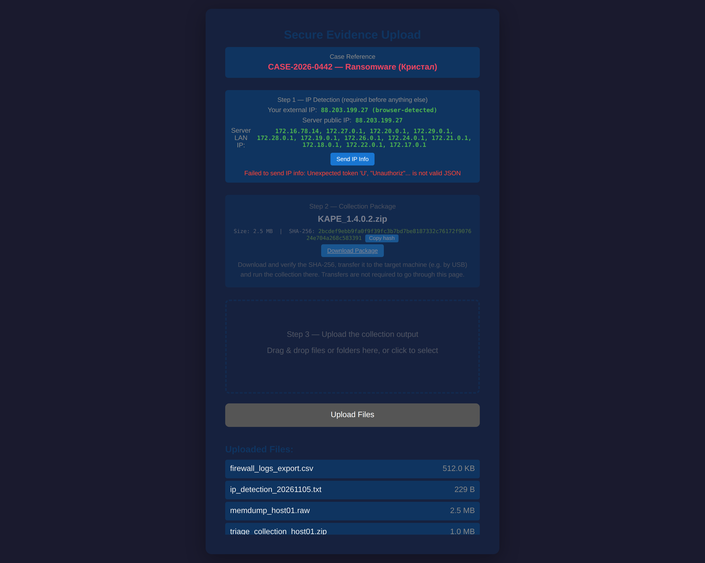
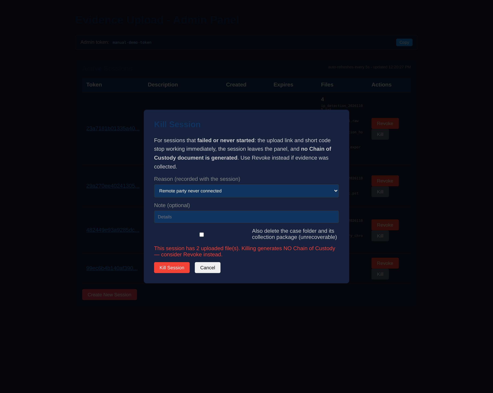

Evidence Upload is a self-hosted web application for collecting digital forensic evidence from remote parties. The analyst runs the server, creates a one-time upload session, and shares a link. The remote party uploads evidence through a simple browser interface — no account, no client software. Every file is hashed on arrival, and closing the session produces a Chain of Custody PDF suitable for case documentation.
.sha256 sidecar files for independent verification
Download the archive for your platform from the
Releases page of the project repository. Unix builds ship as
.tar.gz archives — extracting restores the executable bit, so no
further steps are needed:
# macOS (Apple Silicon) curl -LO https://github.com/4553n/evidence-upload/releases/download/v2.3.0/evidence-upload-v2.3.0-macos-arm64.tar.gz tar -xzf evidence-upload-v2.3.0-macos-arm64.tar.gz # macOS (Intel) — use the -macos-amd64 archive # Linux — use the -linux-amd64 archive # Windows — download the .exe and run it directly
chmod +x evidence-upload and
xattr -d com.apple.quarantine evidence-upload, or right-click →
Open → Open.
Start the server from a terminal. With no flags it listens on port 8443,
stores evidence in ./evidence, and applies secure defaults:
a public bore tunnel and HTTPS with an auto-generated self-signed
certificate. The tunnel client is built into the application — nothing is
downloaded or installed:
$ ./evidence-upload-v2.3.0-macos-arm64 Detected external IP: 203.0.113.44 Tunnel established: bore.pub:41739 -> localhost:8443 Evidence Upload Server v2.3.0 starting on :8443 Storage: ./evidence Base URL: https://bore.pub:41739 Admin token: 3f2a91c0e7b4d5a8c1e2f304b5d6a7c8 (keep private; set via -admin-token or ADMIN_TOKEN) TLS: HTTPS enabled (cert: evidence/.tls/selfsigned-cert.pem) TLS fingerprint (SHA-256): 00:0B:85:88:D8:00:81:A7:84:4A:82:C3:BC:19:2F:… Opening admin interface...
The browser opens the admin panel automatically, pre-authenticated with the
admin token. Use -no-browser to suppress the auto-open.
To run without a tunnel (pure LAN), pass -tunnel=; for plain HTTP,
pass -tls-selfsigned=false.
-admin-token).
Anyone holding it has full administrative control of the server. Store it like
a credential — in a password manager, not in a shared document.
-tls-selfsigned to the startup
command (or supply a real certificate with -tls-cert/-tls-key)
to encrypt everything end-to-end — see §12.
The admin panel at /admin lists every active session. The table
refreshes automatically every five seconds — upload counts, file names, and
hashes appear without reloading the page. The refresh pauses while the tab is
hidden and resumes when you return. The admin token is shown at the top of the
panel with a Copy button, so it can be shared or re-used
without digging through the console.
| Column | Meaning |
|---|---|
| Token | Session identifier — click it to open the full session detail view |
| Description | The case description chosen at creation; also names the evidence folder on disk |
| Created / Expires | Session validity window; expired sessions are cleaned up automatically |
| Files | Upload count, with each file name and a short SHA-256 prefix |
| Actions | Revoke — closes the session and generates the Chain of Custody PDF |
Click Create New Session, choose how long the link should stay valid, and enter a description. Use whatever identifies the case for you — a case number, ticket ID, or short summary. The description becomes the name of the evidence folder on disk (sanitized to a safe form). Optionally attach the collection package right here (a zipped KAPE folder, a Binalyze collector, …) — the file the remote party needs to run the collection on the target machine. It can also be attached or replaced later from the session detail view.

When the session is created, the panel shows a short link and the bare code:

https://bore.pub:41739/e/K7M3-Q9P2
The short link is designed to be typed by hand when clicking is
not an option — read the code aloud, dictate it over the phone, or write it on
a note. Codes accept lowercase and the dash is optional (k7m3q9p2
works too). The full ?token=…&secret=… link keeps working as an
alias, so nothing shared earlier breaks.
Click a session's token to open its detail view. It updates live while open and shows everything recorded about the session so far.

The remote party opens the upload link in any modern browser. There is nothing to install and no account to create. Everything is strictly ordered: nothing may be downloaded or uploaded before the uploader's IP is documented and the session is locked to it.


The page also keeps an eye on the session: if the analyst revokes or kills it, or it expires, a notice appears within seconds, everything locks itself, and no further activity is possible.
The collection package is the tool you hand to the remote party — a zipped KAPE folder, a Binalyze collector, an acquisition script. Attach it when creating the session (optional picker in the dialog) or later from the session detail view via Attach / Replace / Remove. The file is stored outside the case folder (evidence stays pure) and its SHA-256 is recorded in the session, the activity log and the Chain of Custody.
The remote party gets it from the upload page (Step 2, after the IP info), or directly via the short link (the session's code works here too):
https://bore.pub:41739/t/K7M3-Q9P2
When collection is finished, click Revoke. You are prompted for the analyst name that will appear on the certification block of the Chain of Custody document, and optionally for a company logo (PNG/JPEG) to brand the document header. The logo can be saved once and reused (Use saved logo) — it is also applied automatically to CoCs generated when sessions expire.

Revoking writes CHAIN_OF_CUSTODY.pdf (plus a
.sha256 sidecar of the PDF itself) into the case folder next to
the evidence. Sessions that expire without being revoked get the same document
automatically, signed as System (expired). The remote party is
notified at the same moment — their upload page shows that the session was
closed and locks the upload form.
Sessions that failed or never started — the remote party never connected, the link is lost, or the session locked to a wrong address — should not go through the CoC ceremony. Use Kill instead: the link and short code die immediately, the session leaves the panel, and a tombstone records the reason. No Chain of Custody is generated (the dialog warns if files were already uploaded), and optionally the case folder can be deleted — unrecoverable, and recorded.


.sha256 sidecars with sha256sum -cText in the PDF is rendered with embedded Unicode fonts (DejaVu), so case names in any script — Cyrillic, Greek, Hebrew, accented Latin — render correctly. Characters outside the fonts' coverage (emoji, CJK) are marked with a replacement glyph rather than breaking the document. The footer records the exact software version that generated the document.
| Flag | Default | Description |
|---|---|---|
-port | 8443 | Server port |
-storage | ./evidence | Local storage path for uploaded files |
-backup | "" | Network share backup path (optional) |
-expire | 24h | Default session expiration duration |
-secret | auto-generated | HMAC secret key |
-admin-token | auto-generated | Admin panel token (printed at startup) |
-tls-cert | "" | TLS certificate file for HTTPS (use with -tls-key) |
-tls-key | "" | TLS private key file for HTTPS |
-tls-selfsigned | true | Serve HTTPS with an auto-generated self-signed certificate |
-max-size | 10737418240 | Maximum upload size in bytes (10 GB) |
-alert-email | "" | Email address for security alerts |
-alert-webhook | "" | Webhook URL for alerts (Slack/Discord/etc.) |
-alert-desktop | true | Enable desktop notifications |
-alert-log | ./alerts.log | Log file for security alerts |
-external-ip | auto-detected | External/public IP for internet access |
-base-url | auto-detected | Base URL used in generated links |
-tunnel | bore | Tunnel provider: bore, cloudflare, or external (empty value disables) |
-bore-path | — | Deprecated: the bore tunnel client is built in, flag ignored |
-cloudflare-path | auto-detected | Path to the cloudflared binary |
-cloudflare-domain | "" | Custom domain for the Cloudflare tunnel |
-cloudflare-token | "" | Cloudflare tunnel token (from the dashboard) |
-tunnel-name | "" | Named tunnel for Cloudflare (created if missing) |
-tunnel-url | "" | External tunnel URL (multi-analyst mode) |
-no-browser | false | Don't auto-open the browser on startup |
-version | — | Show version and exit |
Settings can be persisted instead of typed on every run. Location:
~/.evidence-upload.conf on Linux/macOS,
%USERPROFILE%\.evidence-upload.conf on Windows.
Priority: command-line flags > environment variables > config file > defaults.
# ~/.evidence-upload.conf STORAGE=/mnt/evidence/cases BACKUP= ADMIN_TOKEN=a-long-random-token-you-chosenya ALERT_EMAIL=soc@example.com ALERT_WEBHOOK=https://hooks.slack.com/services/… TUNNEL=cloudflare CLOUDFLARE_DOMAIN=evidence.example.com
After editing, protect the file: chmod 600 ~/.evidence-upload.conf.
When uploaders are on the internet, a tunnel exposes the server without opening
firewall ports. A bore tunnel is started by default;
choose a different provider or disable the tunnel with -tunnel.
| Mode | Transport | Notes |
|---|---|---|
-tunnel cloudflare | HTTPS | Recommended for internet exposure. Quick tunnels get a random
trycloudflare.com URL; token-based tunnels can use your own domain.
Interoperates well with Cloudflare Access. |
-tunnel bore | Plain TCP | Default. Zero configuration — the tunnel client is built into the
application (nothing downloaded or executed). bore does not encrypt traffic:
pair with -tls-selfsigned (or -tls-cert/-tls-key) so
everything inside the tunnel is encrypted end-to-end. |
-tunnel external | Depends | For multi-analyst setups: provide the public URL with
-tunnel-url when something else already exposes the server. |
| Control | How it works |
|---|---|
| Admin token | Every /admin/api/* endpoint requires it
(X-Admin-Token or Authorization: Bearer). Auto-generated
at startup, printed once per run; the panel prompts and remembers it for the
browser session. Compared in constant time. |
| Session credentials | Uploads require the session's HMAC token and secret — both are
128-bit random values. Secrets are never included in the session list API.
Sessions persist to <storage>/.sessions.json (owner-only
permissions), so links survive server restarts. |
| IP binding | The session locks to the uploader's external IP when the IP info is sent (proxy headers, or browser detection through the tunnel); loopback and private addresses are never recorded. Every gated request re-verifies the caller against that identity — mismatches are rejected and alerted. Nothing (downloads or uploads) is possible before the IP info step. |
| Integrity | SHA-256 computed server-side per file, written as .sha256
sidecars; the CoC PDF itself is hashed too. |
| Audit trail | Every action recorded with timestamp and source IP; reflected in the CoC PDF and the alert log. |
| Alerts | Desktop, email, webhook, and log-file notifications for uploads and access anomalies. |
-tls-selfsigned (zero-config) or -tls-cert/-tls-key
(real certificates) so all traffic — including through plaintext tunnels like
bore — is encrypted end-to-end between the browser and your server.
| Symptom | Cause and fix |
|---|---|
zsh: permission denied |
The binary lost its executable bit in download. Use the .tar.gz
release archive, or run chmod +x on a bare binary. |
| macOS: "cannot be opened because the developer cannot be verified" | Gatekeeper quarantine on downloaded binaries. Right-click → Open
→ Open, or clear with
xattr -d com.apple.quarantine <file>. |
| "Failed to revoke session: Could not reach the server" | The browser lost the server (process stopped, tunnel dropped). Check the server terminal, restart if needed, and retry. |
| "Server error (HTTP 401): invalid or missing admin token" | The admin token is wrong or expired for this browser session. Reload the panel and enter the token printed at server startup. |
| Short link says "This link is invalid or expired" | The code does not match any session — check for typos (the letters
I, L, O, U are never used).
Codes are accepted in lowercase and without the dash. If it previously
worked, the session may have been revoked or expired. |
| Short link returns "Too many attempts" (HTTP 429) | Five failed lookups from one address within 5 minutes trigger a temporary lockout; wait a few minutes and double-check the code. Repeated lockouts raise security alerts on the analyst's side. |
| Upload link reports a session problem | The message names the exact reason: closed by the analyst (revoked), expired, or not found (malformed link, or a link from a server older than v2.3.0 that lost sessions on restart). Ask the analyst for a fresh link if in doubt. |
| Uploader sees "Send IP information first" (403) | By design: downloads and uploads are impossible until the IP info step completes and the session locks to the uploader's external IP. |
| Session failed or the remote party never connected | Use Kill (not Revoke): the link dies immediately, a tombstone records the reason, and no CoC is generated. Then create a fresh session and reissue the link. |
| Session rejects the uploader | IP binding: the request came from a different address than the locked external IP. If the change is legitimate, kill the session and issue a fresh link. |
| Admin panel shows unexpected sessions | If the server is internet-exposed, external scanners may create sessions through old, unauthenticated versions. Update to v2.2.2 or later, revoke unknown sessions, and check the activity history for source IPs. |
| CoC PDF missing after revoke | Check the server terminal for the error. Very long descriptions are truncated safely since v2.2.2; regenerate by revoking again or from expiry. |
| Browser warns about the TLS certificate | Expected with -tls-selfsigned: the certificate is not issued by
a public authority. Verify the SHA-256 fingerprint printed at startup, then
proceed; use -tls-cert/-tls-key with a real
certificate to remove the warning entirely. |
| Garbled characters in old CoC PDFs | Fixed in v2.2.3 (embedded Unicode fonts). Documents generated by older versions remain valid; their text layer used Latin-1 fonts. |
Each release ships a SHA256SUMS file. Verify your download:
$ shasum -a 256 -c SHA256SUMS # macOS $ sha256sum -c SHA256SUMS # Linux
LICENSE in the repository)internal/custody/fonts/LICENSE-DejaVu.txtEvidence Upload v2.3.0 — User Manual · Generated 2026-11-05 · Interfaces shown are from the v2.2.x series.